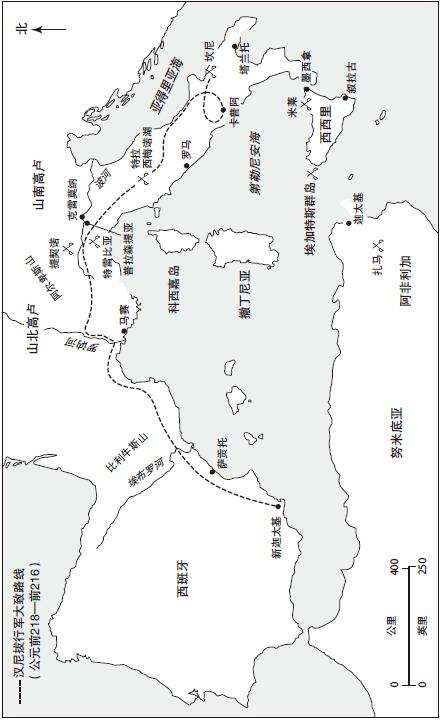
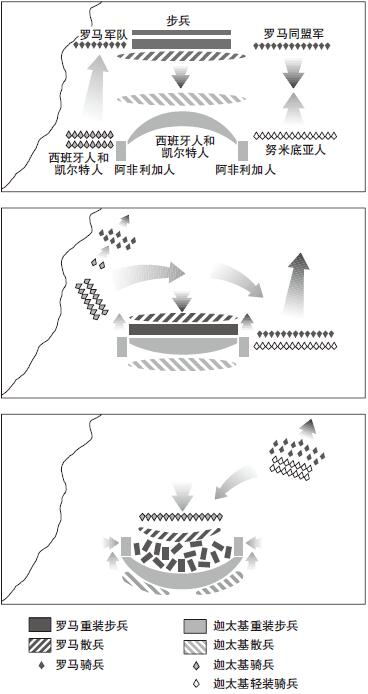

到公元前275年，定义了罗马共和国的政治和社会结构已牢固地建立起来。元老院的集体领导制既提供了稳定的环境，又疏导了贵族的野心。公民大会和选举给了罗马公民一个发声的渠道，而农业经济又为罗马军队提供了人力支持。罗马的同盟网络从周边的拉丁民族一直延展到大希腊地区的城市。这让罗马的资源储备更为雄厚，进而实现了对意大利中部和南部的控制。
但罗马仍然只是一方霸主。其影响力仅存在于意大利半岛内，而对于更广阔的地中海事务，罗马起到的作用十分有限。然而，到公元前3世纪，这一情况开始发生转变。罗马人的视线拓展到意大利以外，这让罗马和北非城邦迦太基之间爆发了直接冲突，而后者是罗马共和国建立以来所面对的最危险的敌人。从公元前264年到前146年间，两大强国之间的霸权争夺战差点让罗马倒在了迦太基脚下。这场战争也让罗马拥有了一段最为跌宕起伏的故事，并造就了一批英雄。通过三次“布匿”战争，罗马最终击败了迦太基，从此成为地中海上真正的霸主。

地图4 迦太基帝国和布匿战争
历史是由胜利者书写的。古迦太基几乎没有什么遗迹保留下来，也没有布匿文字记录他们和罗马之间旷日持久的战争。我们对迦太基和布匿战争的了解主要来自李维所写的罗马史，以及出生于迈加洛波利斯的亲罗马的希腊史学家波利比阿的记载。因此，实际上关于迦太基人，我们知之甚少。同时，我们对迦太基人动机和行为的观察是透过罗马敌人带有偏见的镜片进行的。尽管如此，对定义了迦太基并使其成为罗马崛起途中一个可怕对手的那些基本特征，依然存在重构的可能性。
迦太基建于公元前800年左右，由来自东方城市提尔（今黎巴嫩）的殖民者所造。建城者是腓尼基人（拉丁名为punici ），这是一个靠海上贸易生存的民族。迦太基就坐落在今天的突尼斯城岬角处一个极佳的天然港口之上。所处的理想地理位置让它控制着西部地中海的贸易，迦太基因而发展成一个商业帝国，其触角穿越北非，延及西班牙、撒丁尼亚和西西里地区。在古代，迦太基的富饶无人不知。波利比阿称其为“世界上最富裕的城市”。和罗马这个农业国相比，迦太基有大量从事贸易和手工业的人口。这一特征能够从迦太基的政治和军事结构中体现出来。迦太基是寡头政体，由最富裕的几个家庭进行统治。它的军队基本上是由迦太基军官指挥下的雇佣兵组成，其中包括来自努米底亚的精装骑兵，以及虽然并非全然可靠，但令人胆寒的可作武器的北非象群（这些大象今天已经灭绝）。迦太基更为重要的是它的海军力量。它拥有200艘左右五列桨座战舰，桨帆船长约45米，舰首配有镶铜撞角。每艘军舰配备300名桨手并能运载120名海军战士参与作战。在第一次布匿战争爆发前的数年，西地中海一直处于实力强大且训练有素的迦太基海军的支配之下。
罗马共和国在崛起途中和迦太基发生了冲突。两个国家早期的交往是相对友好的。在皮洛士战争期间，罗马和迦太基之间订立了条约，彼此合作，共同抵抗皮洛士的侵略。但在皮洛士战败后，罗马获得了南意大利的控制权，这让后者开始干涉西西里事务。然而，当时的西西里正处在迦太基的势力范围内。迦太基同位于西西里的希腊城邦之间的战争持续了数百年，而该岛上最大的一个城市是叙拉古。公元前288年，一支自称马默尔提尼斯人（马尔斯神的儿子）的意大利雇佣兵侵占了西西里人的城市墨西拿。马默尔提尼斯人肆意蹂躏了迦太基人和叙拉古人的领地，这激起了周边所有邻国的敌意。公元前265年，墨西拿城内的敌对派分别向罗马和迦太基求援。迦太基人首先做出回应，派出一支舰队赶往，但罗马军队旋即在西西里登陆。一名迦太基将领包围了墨西拿（因此举动，后来他被钉死在十字架上）。叙拉古和罗马结成同盟共同对抗迦太基。公元前264年，第一次布匿战争爆发。
迦太基人和西西里之间的交往由来已久，因此他们对来自墨西拿的请求做出回应是易于理解的。但罗马人为何响应了马默尔提尼斯人的求援？其中的一个动机是恐惧。因为罗马人担心迦太基借此机会占领西西里，进而给操控在罗马手中的意大利带来威胁。同时，罗马人对保持意大利同盟者的忠诚也十分在意。通过援助马默尔提尼斯人，罗马向其盟友表明，当后者处于危难之际，罗马人会施以援手，以此表明它的“信任”（f ides ）。罗马史料往往乐于强调恐惧和信任是战争动机，因为罗马人声称他们发动战争只是出于保护自身或朋友的需要。这些动机的确存在，但罗马人不会将整个事实和盘托出。罗马社会是围绕战争和征服带来的经济效益而运转的。与此同时，罗马贵族之间为了获得军事荣耀而彼此竞争。军队的统帅是执政官，而所有的重大决定都必须要经过元老院的辩论后才能做出。因此，元老贵族集团是战争的努力推动者。
在同墨西拿的冲突发生后不久，西西里的陆上战争很快变得相持不下。迦太基主要依赖沿海城市的防御，而罗马在攻城战争中的经验明显不足。迦太基军舰不断为沿海城镇提供补给，甚至能够通过海路运输战象。这一僵局再加上迦太基海军不断骚扰意大利沿海，促使罗马第一次组建了一支拥有战斗力的海军。此前罗马已经拥有少量船舰，但军舰体积较小，装备陈旧，完全无法和迦太基人所拥有的最顶尖的战舰相媲美。得益于一支迦太基五列桨座战舰搁浅，罗马人硬是在60天内仿造出了120艘自己的五列桨座军舰。船上水手均是从意大利南部城市的希腊同盟者中招募而来。
罗马史料在描述这段历史的时候，言辞可能稍有夸大，但他们白手起家建造出自己的舰队绝对是共和国历史上最杰出的成就之一，也是对罗马人组织天分的致敬。和迦太基海军相比，为了弥补技术和经验的不足，罗马人在他们的船上配备了“鸦喙”（corvus ）。这种倾斜的木板尾端镶嵌的铁钉可以将两艘船钉在一起，这样被固定的甲板就变成陆地战争的战场。配备这一武器的罗马新型战舰在公元前260年的米莱战役中大获全胜。共有50艘迦太基军舰被俘获，后来这些船只的船喙被用来装饰罗马广场上的柱子，以纪念战役的指挥官盖乌斯·杜伊利乌斯。
横空出世的罗马海军改变了战争的走向。公元前265—前255年，当罗马人察觉机会来临之时，他们将一支部队用军舰送往阿非利加，试图给迦太基本土造成威胁。然而，这支军队被斯巴达人科桑西普斯所指挥的雇佣兵打败。随后罗马的救援舰队又遇到了一场猛烈的风暴。这次海难共摧毁了280艘船只，其中超过10万名桨手和士兵葬身海底。第二支舰队在公元前253年再次遭遇风暴，其部分原因是在恶劣的天气下，“鸦喙”让罗马船队更易于受损。后来，由于罗马指挥官普布利乌斯·克洛狄乌斯·普尔喀把圣鸡扔下甲板而引起了神的愤怒，让迦太基人在公元前249年获得了德雷帕拿海战的胜利。就像在陆地上进行的战争一样，海战也变成了消耗战，任何一方都很难占到便宜。
到公元前240年，战争进入第三个十年，双方都已精疲力竭。可能有占意大利人力资源20%的人口死于海上风暴和战争，但罗马人依然拒绝议和，反而越走越远。他们征收新税，贵族强制自己购买国债。每三个元老需提供一艘战舰。因此，更多的军舰被建造出来。罗马人终于在公元前241年于西西里西部海域的埃加特斯群岛附近获得海战的最终胜利。迦太基被迫求和。
根据条约，战败的迦太基人放弃了西西里。此外，尽管没有失掉其他领土，他们还要赔偿3200个塔伦特银币（重量约100吨）。巨额赔款让迦太基举国难支，条约甫一签订就立即引起了一场大规模的雇佣兵造反，一直持续到公元前237年。罗马人又趁迦太基虚弱之际侵占了撒丁尼亚，并威胁要和迦太基重开战火，除非后者追加支付价值1200塔伦特的贡物。迦太基人除了接受这一苛刻的条款外别无选择。但是罗马人的蛮横只能激起迦太基人更大的愤懑。就像2000多年后的《凡尔赛和约》一样，第一次布匿战争的结束为日后的冲突埋下了种子。
第一次布匿战争不仅展示了罗马在军事和经济重压之下所具有的韧性，也证明了在巨大压力之下罗马同盟者的忠诚。在战争结束时，西西里成了第一个向罗马缴纳赋税的行省。和意大利同盟者不同，罗马人派一名法务官做西西里的总督，除了有当地驻扎的小规模军队作后盾外，他还在一名财务官的协助下监督赋税征收。除此以外没有增设其他的官僚机构。罗马人喜欢保留现有的社会和政治架构，并借地方精英之手实施统治。西西里这种简单灵活的体制为罗马所有行省行政制度提供了范例，很快就被引入到撒丁尼亚。
在丢掉西西里和撒丁尼亚之后，迦太基转向了它位于西班牙的最后一份海外殖民地。迦太基人从那里开始向外扩张领土，通过开采丰富的西班牙银矿来支付罗马人的贡赋。西班牙的总指挥官是哈米尔卡·巴卡（“雷暴者”），他决定恢复迦太基的荣光，一雪前耻。据说哈米尔卡为此让年仅9岁的儿子发誓成为罗马人的一生之敌。他的儿子名叫汉尼拔—就个人而言，这是罗马共和国面临的最强对手，或许也是古代西方世界最为杰出的军事统帅。汉尼拔的形象在李维的笔下已成为不朽：
正是汉尼拔把迦太基军队带向了第二次布匿战争。李维把战争爆发的主要原因归结于汉尼拔本人以及他从哈米尔卡那里继承的“巴卡血仇”式的反罗马情结。然而，现实因素更为复杂。迦太基在西班牙地区的扩张给罗马敲响了警钟。约公元前226年，罗马和迦太基签订了一项条约，规定以西班牙北部的埃布罗河为边界，各自划分势力范围。然而，罗马同西班牙城市萨贡托订立了友好协议，而后者却位于埃布罗河以南100公里处的迦太基辖区内。公元前219年，汉尼拔出兵攻打该城，给罗马提供了一个绝佳的战争理由。在迦太基拒绝了罗马交出汉尼拔进行惩罚的请求后，第二次布匿战争于公元前218年爆发。汉尼拔的行为毫无疑问是挑衅性的，虽然罗马声称是为了保护同盟国，其实它迫不及待地想要参战。所以，“历史上最刻骨铭心的战争”（李维语）就这样爆发了。
罗马一度打算在西班牙和北非的迦太基领土作战。但等到罗马军队就绪之时，汉尼拔已经向阿尔卑斯山进发了。他决定直接侵入意大利来打击罗马人力和资源上具备的优势。所以汉尼拔放弃了交通上的便利，冒险吃力地翻越崇山峻岭。半数以上的士兵和众多大象倒在了阿尔卑斯山一个个关口，但最终，汉尼拔率领着2万余名拥有丰富战斗经验的西班牙和北非步兵，及6000名精英骑兵（其中大部分是努米底亚人）进入了意大利。阿尔卑斯山南麓的意大利地区被称作山南高卢，它在第一次布匿战争数年后才被罗马人征服。这时，高卢土著居民造反，加入了汉尼拔的南征军。
公元前218年11月，汉尼拔的努米底亚骑兵在提契诺河边发生的小规模战斗中首获胜利。战斗结束时，罗马执政官森普罗尼乌斯·隆古斯率领的主力作战军团还未赶到。公元前218年12月的一个异常寒冷的早晨，自以为胜券在握的罗马人跨过特雷比亚河向迦太基军队发起进攻，随后战败。此役让罗马损失兵力多达2万余人。汉尼拔当即释放战斗中的所有意大利俘虏，并提出不要赎金。他宣称此举是为了“解放”罗马的同盟者。在这一阶段，汉尼拔的舆论攻势未见明显效果。在过了一个冬天之后，转眼到了公元前217年，另一支罗马军队在新当选执政官之一，盖乌斯·弗拉米尼乌斯的率领下再次碰上汉尼拔的部队。穿过伊特鲁里亚一路追赶汉尼拔的罗马军队在绕特拉西梅诺湖畔行军途中，直接陷入了敌人设好的包围圈中。这是一个雾气弥漫的清晨，汉尼拔的努米底亚骑兵切断了罗马的侧翼，致使15000名罗马士兵在战斗中被杀或投湖而亡，其中就包括统帅弗拉米尼乌斯。
处于危急关头的罗马人任命了一名独裁官，即昆图斯·法比乌斯·马克西穆斯。其绰号为“拖延者”（Cunctator ），因为法比乌斯采取了一个新战术，那就是避免和迦太基军队正面作战，以消磨汉尼拔的战斗力。这种非典型的罗马军事策略极其不受欢迎。与此同时，法比乌斯也未能阻止汉尼拔溜进意大利南部地区。公元前216年，新任执政官卢修斯·埃米利乌斯·保卢斯和盖乌斯·特伦提乌斯·瓦罗率领部队在一个叫作坎尼镇的平坦的平原地带遭遇汉尼拔。虽然罗马兵力几乎是迦太基人的两倍，汉尼拔依然成功地实现了对罗马军队的包围。随后，被困其中的罗马人惨遭屠戮。此役可能造成5万名罗马士兵被杀，这是一个多世纪以来罗马遭受的最为惨烈的一次失利。而此时的汉尼拔距罗马城仅6英里之遥。
坎尼会战是汉尼拔最具标志性的一次胜利，一举奠定了他军事天才的声名（时至今日，汉尼拔当年采取的战术仍在军官培训课程中被当作案例讲授）。他的宣传也第一次起到作用，获取了一部分罗马盟友的投奔，尤其是获得了意大利南部的希腊殖民地和位于西西里的叙拉古的支持。但汉尼拔未能对罗马城发起进攻，这可能是因为他有所顾虑，或是因为他缺乏足够的资源这么做。即便在坎尼惨败之后，罗马的意大利同盟者中的大多数依然对盟主保持忠诚。汉尼拔也让官员年度竞选这一共和国制度的弊端暴露无遗。现在罗马又再次转向“拖延者”法比乌斯·马克西穆斯，他和更加激进的马尔库斯·克洛狄乌斯·马尔凯鲁斯一起当选了执政官。这两个人被冠以“罗马的盾与剑”的美名，担负起罗马复兴的巨大使命。在一连串光辉的胜利中，汉尼拔在短短的三年时间里，让多达7万名罗马将士血溅沙场。到公元前212年，在意大利、西班牙和西西里战场，罗马人共投入了20万兵力。差不多有5万兵力被用来监视和跟踪数量较少的汉尼拔军队。这些罗马士兵再也没有投入到正面战场中去，而是牵制汉尼拔行动，并打击那些加入汉尼拔阵营的力量。此时罗马人身负着巨大压力，然而，就像在第一次布匿战争中一样，他们拒绝倒下。

地图5 坎尼会战平面图
在牵制住汉尼拔之后，罗马人的注意力转向了他处。马尔凯鲁斯于公元前211年攻陷了反叛城市叙拉古。阿基米德的一系列精巧发明让罗马人的攻城战打得异常辛苦。在这些武器中，据说有一个爪钩可将罗马船只从水面上吊起来。还有一种叫“蝎子”的武器，它能投射小型铁制飞镖。叙拉古城被攻陷后，阿基米德被一个无名小卒所杀。叙拉古大捷确保了罗马对西西里的控制权。马尔凯鲁斯死于公元前208年汉尼拔在意大利设的另一场伏击战。不久之后，迦太基人设法（也是唯一的一次）为汉尼拔的军队增加支援。然而，在公元前207年，在梅陶罗河附近的一场战斗中，迦太基后援军被罗马人击败。敌军统帅，汉尼拔之弟哈斯德鲁巴的头颅被扔进了汉尼拔营帐中。至此阶段，意大利战场差不多退居次席。决定性的事件正在西班牙拉开帷幕。
在汉尼拔翻越阿尔卑斯山进入意大利后，罗马将领普布利乌斯和格涅乌斯·科尔涅利乌斯·西庇阿就对迦太基人在西班牙领土发起了一系列攻击。到公元前211年，两兄弟均已战死疆场。新任统帅是普布利乌斯年仅24岁的儿子，与父重名的普布利乌斯·科尔涅利乌斯·西庇阿。这种接替在罗马历史上还是第一次。年轻的西庇阿此前从未掌过权，甚至还没有获得竞选公职的资格。但他很受欢迎，勇气十足，又是一名优秀的战士。一上任他就立即着手在西班牙重组军队。他将西班牙短剑（gladius ）和重型长矛（pilum ）引入军队阵容。同时，一个军团由数个中队组成，每个中队含120人，军团分为三条战线，共4200人。这样的阵容更具灵活性，因为它能高度适应西班牙坎坷不平的地形。历史证明它甚至在和更加强硬的希腊步兵方阵对抗时同样效果显著。公元前209年，西庇阿率领着这支全新的部队，用5天的时间急行250英里，对迦太基人设在新迦太基（今卡塔赫纳）的指挥部发起了闪击战。意识到该城朝海的一面防守虚弱，西庇阿趁退潮时分，穿过一个环礁湖，攻取了新迦太基。新迦太基城的陷落让罗马控制了附近丰富的银矿资源。到公元前205年，迦太基人被迫从西班牙撤离。
公元前205年，西庇阿回到罗马城，受到英雄一样的欢迎。他趁热打铁，顺利当选执政官，并战胜了以法比乌斯·马克西穆斯为代表的那些年长的保守派元老，成为既定的北非远征军军团统帅。罗马军队在北非登陆迫使汉尼拔不得不返回迦太基加强防御。到此时，汉尼拔已经有30年没有见到故国了。西庇阿用外交手段获得了努米底亚人的支持。在公元前202年进行的扎马会战中，汉尼拔失去了军队中惯常的优势—骑兵。训练有素的罗马步兵敞开式布阵让汉尼拔军队的战象冲进来却未造成损伤。一场酣战过后，西庇阿成了最后的胜利者，汉尼拔只能求和。在两国签订的协议中，迦太基需要支付罗马1万塔伦特赔款，并在50年内分期付清。同时，迦太基人失去了北非以外的所有土地。迦太基城幸存下来，但它曾经的霸权从此不复存在。西庇阿举行了罗马有史以来最为盛大的凯旋式。为了纪念这场胜利，他获得了“阿非利加努斯”的名号。
第二次布匿战争再次验证了罗马的坚韧不拔以及罗马意大利同盟者令人击节的忠诚。汉尼拔或许拥有无可匹敌的天赋，他取得的成就也同样永垂不朽。但正如第一次迦太基战争那样，罗马人消化掉吞下去的苦果，收获的却是胜利。然而，这种胜利是付出了代价的。两次战争导致的大规模人力损耗不可避免地对罗马农业社会造成了显著影响。随着时间的推移，人口可以恢复，但社会混乱和军事扩张带来的财富所产生的合力，对罗马下一个世纪所面临的内部危机起到至关重要的作用。
对罗马而言，同样不可小觑的是强势人物的崛起。有史以来第一次，这些人手中握有的权力和荣誉对元老院的集体统治形成威胁。当西庇阿于公元前205年当选执政官，发动扎马远征之前，他仅30岁出头。在获得执政官位以前，一般需要拥有担任低级别官职的经历，而西庇阿此前从未担任过任何此类官职。他还获得了统兵权，这使他位居更年长的同代人如法比乌斯·马克西穆斯之上。西庇阿史无前例的政治履历，伴随着他取得的巨大军事胜利和获得“阿非利加努斯”（阿非利加征服者）的称号，让元老院精英中的每一个人都更难与其竞争。从后世的角度去评价，我们可以将西庇阿·阿非利加努斯视作罗马共和国历史上的第一个“军阀”，这些军阀身上具备的超凡魅力、财富和荣耀将其置于元老院的对立面。虽说元老院的集体权力依然强大，但罗马精英的竞争精神不可避免地让其中某些人试图阻挠西庇阿的成功。在罗马共和国历史最后二百年中出现了一系列军阀，并在尤利乌斯·凯撒和皇帝奥古斯都身上达到顶峰。
在公元前2世纪，罗马和迦太基之间发生了最后一次冲突，尽管“第三次布匿战争”（这一名称并不恰当）更像是双方漫长斗争中的一次可悲的尾声。公元前202年后，在汉尼拔率领之下，迦太基人的活力得到一定程度的复苏，直到公元前195年他被迫流亡海外，以免被移交到罗马人手中。根据投降协议，迦太基不许主动采取任何军事行动。这个限制被邻国努米底亚利用，后者不停地侵占迦太基的领土。迦太基向罗马发出的每次求助，都遭到后者的拒绝。在公元前151年，在付清了最后一批赔款后，迦太基人开始向努米底亚发起攻击。罗马人立即做出反应，派出由鹰派元老马尔库斯·波尔奇乌斯·老加图率领的一个使团前往阿非利加进行调查。当加图回到罗马后，他坚信迦太基人对罗马再次形成了威胁。此后，每当在元老院发言之时，他都会在演讲结束时加上那句著名的“迦太基必须毁灭”（Carthago delenda est ）的口号。
公元前149年，罗马再次派出军队出征迦太基。迦太基人答应了罗马人开出的所有条件，并主动提出放弃此前被扣押的300个人质，交出手中所有武器。然而，罗马人接着又要求迦太基人离开自己的家园，在距离大海至少10英里外的土地上建造一座新城。处于绝望中的迦太基人被迫反击，他们英雄般地抵抗了罗马长达三年之久。在经历几次挫折后，罗马人最终又选择了一位同样因过于年轻而未达到执政标准的年轻人，普布里乌斯·科尔涅利乌斯·西庇阿·埃米利阿努斯为执政官。他是西庇阿·阿非利加努斯过继到本族的孙子。正是在他的带领之下，迦太基城终于在公元前146年被攻破。整座城市被彻底摧毁，活下来的人全部变卖为奴，城池遭到诅咒并被撒盐。从此北非成为罗马共和国的一个行省。